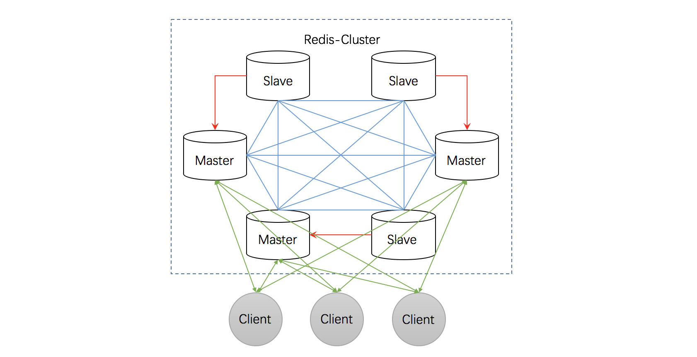

- 01 开篇词：从中间件开始学习分布式.md.html
- 02 走进分布式中间件（课前必读）.md.html
- 03 主流分布式缓存方案的解读及比较.md.html
- 04 分布式一致性协议 Gossip 和 Redis 集群原理解析.md.html
- 05 基于 Redis 的分布式缓存实现及加固策略.md.html
- 06 Redis 实际应用中的异常场景及其根因分析和解决方案.md.html
- 07 Redis-Cluster 故障倒换调优原理分析.md.html
- 08 基于 Redis 的分布式锁实现及其踩坑案例.md.html
- 09 分布式一致性算法 Raft 和 Etcd 原理解析.md.html
- 10 基于 Etcd 的分布式锁实现原理及方案.md.html
- 11 主流的分布式消息队列方案解读及比较.md.html
- 12 搭建基于 Kafka 和 ZooKeeper 的分布式消息队列.md.html
- 13 深入解读基于 Kafka 和 ZooKeeper 的分布式消息队列原理.md.html
- 14 深入浅出解读 Kafka 的可靠性机制.md.html
03 主流分布式缓存方案的解读及比较
分布式缓存一般被定义为一个数据集合，它将数据分布（或分区）于任意数目的集群节点上。集群中的一个具体节点负责缓存中的一部分数据，整体对外提供统一的访问接口。分布式缓存一般基于冗余备份机制实现数据高可用，又被称为内存数据网格（IMDG，In-Memory Data Grid）。在云平台飞速发展的今天，作为提升应用性能的重要手段，分布式缓存技术在工业界得到了越来越广泛的关注和研发投入 。本文将介绍三种分布式缓存开源软件：Redis、Memcached 及 Tair。
1. Redis
目前，在所有可实现分布式缓存的开源软件中，Redis 应用最为广泛，开源社区也最为活跃，开源客户端支持语言也最为丰富，因此，我首先介绍 Redis。
1.1 Redis 简介
关于 Redis
Redis 其实是一个缩写，全名为 Remote Dictionary Server。其作者是来自意大利西西里岛的 Salvatore Sanfilippo，现在居住在卡塔尼亚，目前供职于 Pivotal 公司。他用网名 antirez 发表了大量博客，感兴趣的读者可以去逛逛（地址是 antirez.com），当然也可以去 Follow 他的 Github，地址是：http://github.com/antirez。从2010年3月15日起，Redis 的开发工作由 VMware 主持。2013年5月，Redis 得到 Pivotal 的赞助。
Redis 使用 ANSI C 语言编写，最新版本（4.0.10）代码规模7.6万行。与我们熟知的关系型数据库 Oracle、Microsoft SQLServer、MySQL 不同，Redis 属于 NoSQL 数据库（非关系数据库）。
Redis 可以做什么
Redis 是一个开源的，基于内存存储亦可持久化的 Key-Value 存储系统，可用作数据库、高速缓存、锁和消息队列。它支持字符串、哈希表、列表、集合、有序集合、位图、HyperLogLogs 等数据类型。内置复制、Lua 脚本、老化逐出、事务以及不同级别磁盘持久化功能，同时，Redis还支持Sentinel和Cluster(从3.0开始)等高可用集群方案。
作为缓存的常见业务场景有：
- 缓存热点数据，减轻数据库负载；
- 基于 List 结构显示最新的项目列表；
- 基于 Sorted Set 来做排行榜，取 Top N；
- 基于 Set 来做 uniq 操作，如页面访问者排重；
- 基于 Hset 做单 Key 下多属性的项目，例如商品的基本信息、库存、价格等设置成多属性。
1.2 Redis 特点
与其它 Key-Value 缓存产品相比，Redis 有以下特点：
- Redis 支持数据的持久化（包括 AOF 和 RDB 两种模式），可以将内存中的数据保存在磁盘中，重启的时候可以再次加载进行使用，性能与可靠性兼顾；
- Redis 不是仅仅支持简单的 Key-Value 类型的数据，还支持字符串、列表、集合、散列表、有序集合数据结构的存储，这一优势使 Redis 适用于更广泛的应用场景；
- Redis 支持数据的备份，即 Master-Slave 模式，Master 故障时，对应的 Slave 将通过选举升主，保障可用性；
- Redis 主进程是单线程工作，因此，Redis 的所有操作都是原子性的，即操作要么成功执行要么失败完全不执行。单个操作是原子性的。多个操作也支持事务，即原子性；
- Redis 性能优越，读的速度达110000次/s，写的速度达81000次/s；此外，Key 和 Value 的大小限制均为 512M，这阈值相当可观。
除了上述特点，Redis 还支持 Publish/Subscribe、通知、Key 老化逐出等特性。
Redis 支持多种数据类型
它支持字符串、哈希表、列表、集合、有序集合，位图，HyperLogLogs 等数据类型，每种数据类型对应不同的数据结构以支持不同的应用需求。
此外，Redis 底层实现采用了很多优秀的数据结构，使其具有优异的性能，例如 Redis 使用跳跃表作为有序集合键的底层实现之一，如果一个有序集合包含的元素数量比较多，又或者有序集合中元素的成员是比较长的字符串时，Redis 就会使用跳跃表作为有序集合键的底层实现。跳跃表以有序的方式在层次化的链表中保存元素，效率可与平衡树媲美——查找、删除、添加等操作都可以在对数期望（LogN）时间下完成。
Redis 主进程是单线程
Redis 主进程是单线程工作，因此，Redis 的所有操作都是原子性的，即操作要么成功执行，要么失败完全不执行。单个操作是原子性的，多个操作也支持事务，即原子性。
由于缓存操作都是内存操作，只有很少的计算，因此即便在单线程下，Redis 性能也很优秀。目前，大多数 CPU 都是多核的，为了提高多核 CPU 的利用率，通常在同一台机器上部署多个 Redis 实例（注意配置不同的端口），官方的推荐是一台机器部署8个实例。
Redis 持久化机制
Redis 支持数据的持久化（包括 AOF日志 和 RDB 快照两种模式），可以将内存中的数据保存在磁盘中，重启的时候可以再次加载进行使用，性能与可靠性兼顾。
需要注意的是，RDB 模式是定时的持久机制，发生宕机时可能会导致数据丢失，而 AOF 模式提供了 appednfsync 参数，通过设置 appednfsync 参数（设置为 always）可以最大限度保证数据安全，但也会降低效率。
Redis 高可用策略
Redis 支持数据的备份，即 Master-Slave 模式，Slave 可使用 RDB 和缓存的 AOF 命令进行同步和恢复，Master 故障时，对应的 Slave 将通过选举升主，保障可用性。
此外，Redis 还支持 Sentinel 和 Cluster（从3.0版本开始）等高可用集群方案。
Redis 数据淘汰策略
Redis 支持配置最大内存，当内存不够用时，会通过淘汰策略来回收内存，Redis 提供了丰富的淘汰策略，粒度粗细皆有，适用多种应用场景。
volatile-lru：从已设置过期时间的数据集中挑选最近最少使用的数据淘汰；volatile-ttl：从已设置过期时间的数据集中挑选将要过期的数据淘汰；volatile-random：从已设置过期时间的数据集中任意选择数据淘汰；allkeys-lru：从数据集中挑选最近最少使用的数据淘汰；allkeys-random：从数据集中任意选择数据淘汰；no-enviction：当内存使用达到阈值的时候，所有引起申请内存的命令会报错。
Redis 内存管理
Redis 使用 C 语言编写，但为了提高内存的管理效率，并没有直接使用 malloc/free 函数，Redis 默认选择 jemalloc 作为内存分配器，以减小内存碎片率。
jemalloc 在64位系统中，将内存空间划分为小、大、巨大三个范围。每个范围内又划分了许多小的内存块单位。当 Redis 存储数据时，会选择大小最合适的内存块进行存储。同时，Redis 为 Key-Value 存储定制了两种对象，其中 Key 采用 SDS（Simple Dynamic String)，Value 采用 redisObject，为内部编码和回收内存的高效实现奠定了基础。
Redis 的内存模型比较复杂，内容也较多，感兴趣的读者可以查阅《深入了解 Redis 的内存模型》博客做更深了解。
Redis 开源客户端
Redis 的开源客户端众多，几乎支持所有编程语言，如下图所示。其中常用的 Java 客户端有 Jedis、Lettuce 以及 Redission。
Redis 支持事务
Redis 提供了一些在一定程度上支持线程安全和事务的命令，例如 multi/exec、watch、inc 等。由于 Redis 服务器是单线程的，任何单一请求的服务器操作命令都是原子的，但跨客户端的操作并不保证原子性，所以对于同一个连接的多个操作序列也不保证事务。
1.3 Redis 高可用解决方案
Redis 有很多高可用的解决方案，本节只简单介绍其中三种。
方案1：Redis Cluster
从3.0版本开始，Redis 支持集群模式——Redis Cluster，可线性扩展到1000个节点。Redis-Cluster 采用无中心架构，每个节点都保存数据和整个集群状态，每个节点都和其它所有节点连接，客户端直连 Redis 服务，免去了 Proxy 代理的损耗。Redis Cluster 最小集群需要三个主节点，为了保障可用性，每个主节点至少挂一个从节点（当主节点故障后，对应的从节点可以代替它继续工作），三主三从的 Redis Cluster 架构如下图所示：

方案2：Twemproxy
Twemproxy 是一个使用 C 语言编写、以代理的方式实现的、轻量级的 Redis 代理服务器。它通过引入一个代理层，将应用程序后端的多台 Redis 实例进行统一管理，使应用程序只需要在 Twemproxy 上进行操作，而不用关心后面具体有多少个真实的 Redis 实例，从而实现了基于 Redis 的集群服务。当某个节点宕掉时，Twemproxy 可以自动将它从集群中剔除，而当它恢复服务时，Twemproxy 也会自动连接。由于是代理，Twemproxy 会有微小的性能损失。
Twemproxy 架构如下图所示：
方案3：Codis
Codis 是一个分布式 Redis 解决方案，对于上层的应用来说，连接到 Codis Proxy 和连接原生的 Redis Server 没有明显的区别（部分命令不支持）， 上层应用可以像使用单机的 Redis 一样使用，Codis 底层会处理请求的转发，不停机的数据迁移等工作。关于 Codis，在第03课中将详细介绍。
2. Memcached 介绍
没有比较就没有伤害，提到分布式缓存，工程师们通常都会将 Redis 与 Memcached 进行比较，那么，Memcached 到底怎么样呢？我们来看下。
2.1 Memcached简介
关于 Memcached
Memcached 始于2003年，是以 LiveJournal 旗下 Danga Interactive 公司的 Brad Fitzpatric 为首开发的一款开源软件。被广泛应用于提升动态 Web 应用性能，其用户包括 LiveJournal、Wikipedia、Flickr、Bebo、WordPress.com、Craigslist、Mixi、Facebook 等著名企业。其命名构成为 Mem+cached，Mem 代表内存，cache 意为缓存，Memcached，即基于内存的缓存。
Memcached 可以做什么
Memcached 是一种基于内存的 Key-Value 存储系统，单个 Value 最大 1MB，适用于存储小块的任意数据（字符串、对象）。
适用的业务场景有：
- 缓存动态网页，以及一些很小但被频繁访问的数据、文件；
- 缓存 Session 数据 、临时数据；
- 缓存计算结果和渲染后的网页模板。
2.2 Memcached 的特点
与其它 Key-Value 缓存产品相比，Memcached 有以下特点：
- 基于内存存储，速度快，对内存的要求高，CPU 要求低，不支持持久化，宕机或重启数据将全部丢失；
- 支持数据逐出机制，Memecache 在容量达到指定值后，将基于 LRU（Least Recently Used，最近最少被使用）算法自动删除不使用的缓存；
- 支持老化机制，可对存储的数据设置过期时间，但过期的数据采取惰性删除机制：不主动监控过期，而是在访问的时候查看 Key 的时间戳，判断是否过期，过期则返回空；
- 节点间相互独立，无集群模式；
- Memcached 采用 Slab Table 方式分配内存，可有效减少内存碎片，提升回收效率；
- 存储数据 Key 限制为250字节，Value 限制为 1MB，适用于小块数据的存储；
- Memcached 本身并不支持分布式，因此，一般在客户端通过一致性哈希这样的分布式算法来实现 Memcached 的分布式存储。此外，也可以通过第三方软件实现分布式；
Memcached 支持的数据类型
Memcache 只支持对键值对的存储，并不支持其它数据结构，复杂的数据结构需要应用程序自行处理。
Memcached 线程模型
Memcached 使用了多线程模式，开启 Memcached 服务器时使用 -t 参数可以指定要开启的线程数，但并不是线程数越多越好，一般设置为 CPU 核数，这样效率最高。此外，Memcached 使用了 NIO 模型以提升并发行能。
持久化机制
Memache 的设计理念就是一个单纯的缓存，因此并不提供持久机制，但可以通过第三方软件，如 MemcacheDB 来支持它的持久性。
客户端
许多语言都实现了连接 Memcached 的客户端，其中以 Perl、PHP 为主。仅仅 Memcached 网站上列出的就有：Perl、PHP、Python、Ruby、C#、C/C++、Lua 等等。
数据淘汰策略
Memecache 在容量达到指定值后，将基于 LRU（Least Recently Used，最近最少被使用）算法自动删除不使用的缓存。在某些情况下 LRU 机制也会带来麻烦，如将不期待的数据从内存中清除，这种情况下启动 Memcache，可以通过 M 参数禁止 LRU 算法。此外，Memecache 只支持单一的淘汰策略，粒度较大，须谨慎使用。
内存管理
与 Redis 内存管理类似，Memcached 也没有直接采用 malloc/free 管理内存，而是采用 Slab Allocation 机制管理内存。
其核心思想与 Redis 异曲同工。首先从操作系统申请一大块内存，并将其分割成各种尺寸的块 Chunk，并把尺寸相同的块分成组 Slab Class。其中，Chunk 是用来存储 Key-Value 数据的最小单位。当 Memcached 接收到客户端发送过来的数据时，首先会根据数据大小选择一个最合适的 Slab Class，并通过查询 Memcached 保存的该 Slab Class 内空闲 Chunk 的列表，就可以找到一个可用于存储数据的 Chunk。当一条数据过期或者丢弃时，该记录所占用的 Chunk 就可以回收，重新添加到空闲列表中。
从以上过程可以看出，Memcached 的内存管理制效率高，而且不会造成内存碎片，但它最大的缺点则是会造成空间浪费。每个 Chunk 都分配了特定长度的内存空间，所以变长数据无法充分利用这些空间。比如将64个字节的数据缓存到88个字节的 Chunk 中，剩余的24个字节就浪费掉了。
2.3 Memcache 高可用方案
Memcached 不支持真正意义上的集群模式，也不支持主从副本以防止单点故障。为了保障 Memcached 服务的高可用，需要借助第三方软件或者自己设计编程实现。常用的第三方软件有 Repcached、Memagent、 memcached-ha 等。
这里有个问题需要明确下，即 Memcached 在实现分布式群集部署时，Memcached 服务端之间是不能进行通讯的，也就是说服务端是伪分布式的，分布式将由客户端或者代理来实现。
方案1：一致性 Hash
Memcached 本身并不支持分布式，因此，可以在客户端通过一致性哈希这样的分布式算法来实现 Memcached 的分布式存储。
当客户端向 Memcached 集群发送数据时，首先通过一致性哈希算法计算出该条数据的目标节点，然后将数据直接发送到该节点上存储。当客户端查询数据时，同样要计算出查询数据所在的节点，之后直接向该节点发送查询请求以获取数据。
通过一致性哈希算法可以保证数据存放到不同的 Mamcached 上，分散了在单台机器上的风险，提高了可用性，但只能解决数据全部丢失的问题，部分数据仍可能丢失，比如当一台 Mamcached 所在节点宕机，它上面的数据还是会丢失。
方案2：Repcached
Repcached，全称 Replication Cached 高可用技术，简称复制缓冲区技术。Repcached 可用来实现 Memcached 的复制功能。它所构建的主从方案是一个单主单从方案，不支持多主多从。但是，主从两个节点可以互相读写，从而可以达到互相同步的效果。
假设主节点坏掉，从节点会很快侦测到连接断开，然后它会自动切换到监听状态（Listen）从而成为主节点，并等待新的从节点加入。
但原来挂掉的主节点恢复之后，只能作为从节点通过人工手动的方式重新启动。它并不能抢占成为新的主节点，除非新的主节点挂掉。这就意味着，基于 Repcached 实现的 Memcached 主从文案中，主节点并不具备抢占功能。
3. Tair 介绍
在分布式缓存领域，除了上面提到的 Redis 和 Memcached ，国内 IT 巨头阿里巴巴也推出了一套解决方案——Tair。Tair 是一个高性能、分布式、可扩展、高可靠的 Key-Value 结构存储系统。除了阿里集团，商用案例较少，社区活跃度较低，本节只作简要介绍。
3.1 Tair 简介
关于 Tair
Tair（全称 TaoBao Pair，Pair 即 Key-Value 键值对）是阿里巴巴集团旗下淘宝事业部开发的一个优秀的分布式高可用 Key-Value 存储引擎。Tair 首个版本于2010年6月推出，经过八年的发展，目前性能已经十分优秀，在淘宝、天猫、蚂蚁金服、菜鸟网络等产品中有着大规模的应用。
Tair 可以做什么
Tair 最新的开源版本实现了四种存储引擎：MDB、FDB、KDB 和 LDB，分别基于四种开源的 Key-Value 数据库：Memcached、Firebird、Kyoto Cabinet 和 LevelDB。其中 Firebird 是关系型存储数据库，Memcached、Kyoto Cabinet 和 LevelDB 是 NoSQL 数据库。
Tair分为持久化和非持久化两种使用方式。非持久化 Tair 可以用作分布式缓存；持久化 Tair 可类比数据库。Tair 之所以集成四种引擎，主要源于阿里众多的应用场景，比如：
- MDB 典型应用场景：用于缓存，降低对后端数据库的访问压力，比如淘宝中的商品都是缓存在 Tair 中；用于临时数据存储，部分数据丢失不会对业务产生较大影响，例如登录；
- LDB 典型应用场景：通用 Key-Value 存储、交易快照、安全风控等；存储黑白单数据，读 QPS 很高；计数器功能，更新非常频繁，且数据不可丢失；
- RDB 典型应用场景：复杂数据结构的缓存与存储，如播放列表，直播间，Top N 排名等。
注意：Tair 的开源版本与阿里内部使用的版本差别较大，比如，开源版本尚不支持 RDB 引擎，RDB 基于 Redis，阿里对其进行了深度优化。
3.2 Tair 特点
Tair 主要有以下几个特点：
- 高性能：在高吞吐下保证低延迟，阿里官方公布的数据显示：双11可达到每秒5亿次峰值的调用量，平均访问延迟在1毫秒以下；
- 高可用：支持自动 failover（故障倒换），确保节点发生故障时，系统能继续正常运行；
- 集成多种引擎，支持众多商用场景；
- 自动复制和迁移：为了增强数据的安全性，Tair 支持配置数据的备份数；
- 负载均衡：Tair 的分布采用的是一致性哈希算法，可保证数据分布的均衡性。
4. Redis VS Memecached
工程实践中，提升性能是一个永恒的话题，很多场景下，使用缓存往往是提升性能的必由之路。
对于一个具体的应用，究竟选择哪种缓存方案，通常需要考虑以下因素：
- 读/写速度；
- 内存分配、管理及回收机制，CPU 使用情况；
- 是否支持分布式存储；
- 可靠性；
- 可用性；
通过前面对 Redis 和 Memecached 的介绍，读者应该已经意识到这样一个事实：Memcached 提供的每项主要功能及其优势，都只是 Redis 功能和特性的子集。任何可以使用 Memcached 的地方都可以对等的使用 Redis。Memcached 提供的只是 Redis 拥有功能的冰山一角。
既然如此，还有必要对二者进行比较吗？在我看来是没有必要的，在可预见的未来一段时间里，Redis 仍会是比 Memcached 更优秀的缓存解决方案。考虑到有很多初学读者，在此，我将 从如下几个方面对 Redis 与 Memecached 进行比较。
4.1 读/写速度
Redis 和 Memecached 都是基于内存的 Key-Value 存储系统，因此都具有极高的读/写性能。不过有两个因素会影响性能：
- Redis 主进程是单线程的，而 Memecached 支持多线程；
- Redis 支持持久化，而 Memecached 不支持。在开启持久化功能的前提下，由于子进程 dump 数据，Redis 的性能会降低。
相同服务器环境下，测试表明（基于 Redis 3.0.7 和 Memecached 1.4.5 ）：Memcached 写性能高于 Redis，前者约9.8万条每秒，后者约7.6万条秒；Memcached 读性能也高于 Redis，前者约10.1万条每秒，后者约9.2万条秒；在高并发场景下，Memecached 的读/写性能亦具有优势。需要特别说明的是，Redis 经过优化，最新的版本性能已经大为改观，具体数据没有测试。
4.2 内存、CPU 使用情况
我们先看下两者的内存使用情况。使用简单的 Key-Value 存储，Memcached 的内存利用率更高，而如果 Redis 采用 Hash 结构进行 Key-Value 存储，由于其组合式的压缩，其内存利用率会高于 Memcached。
再看来两者对 CPU 的使用，在同样的条件下，Redis 的 CPU 占用率低于 Memcached。
4.3 分布式存储
Memcached 本身并不支持分布式，通常在客户端通过一致性哈希这样的分布式算法来实现 Memcached 的分布式存储。当客户端向 Memcached 集群发送数据时，首先会通过内置的分布式算法计算出该条数据的目标节点，然后数据会直接发送到该节点上存储。当客户端查询数据时，同样要计算出查询数据所在的节点，然后直接向该节点发送查询请求以获取数据。此外，也可以通过第三方软件实现分布式，如 Repcached、Memagent。
Redis 从3.0版本以后开始支持分布式存储功能。Redis Cluster 是一个实现了分布式且允许单点故障的 Redis 高级版本，它没有中心节点，具有线性可伸缩的功能。当然，Redis 同样也可以采用第三方软件实现分布式，如 Twemproxy、Codis。综合比较，Redis 对分布式的支持优于 Memcached。
4.4 可靠性
Memcached 完全基于内存存储，不支持持久化，宕机或重启数据将全部丢失。
Redis 支持数据的持久化（包括 AOF 和 RDB 两种模式），可以将内存中的数据保存在磁盘中，重启的时候可以再次加载进行使用，性能与可靠性兼顾。
综合比较，Redis 可靠性高于 Memcached。
4.5 可用性
Redis 支持主从节点复制配置，从节点可使用 RDB 和缓存 AOF 命令进行同步和恢复。Redis 还支持 Sentinel 和 Cluster（从3.0版本开始）等高可用集群方案。
Memecache 不支持高可用模型，需借助第三方软件。
综合比较，Redis 可用性高于 Memcached。
4.6 其它
Memcache 只支持对键值对的存储，并不支持其它数据结构，适用场景较少。
Redis 则支持多种数据结构，包括字符串、哈希表、列表、集合、有序集合，位图，HyperLogLogs 等数据类型；此外，Redis 还支持事务、Lua 脚本等，Redis 不仅可以作为缓存，还可以实现分布式锁、消息队列等。
如上所言，Memcached 提供功能只是 Redis 拥有功能的子集，综合评估，Redis 优于 Memcached。
5. 结语
本文分别介绍了三种主流的分布式缓存开源软件 Redis、Memcached 和 Tair，并解读了各自的优势和不足，使读者可以对分布式缓存方案的现状有一个整体的认识。
参考文献与致谢
本文的部分图片和文字引用了一些博客和论文，尊重原创是每一个写作者应坚守的底线，在此，将本文引用过的文章一一列出，以表敬意。